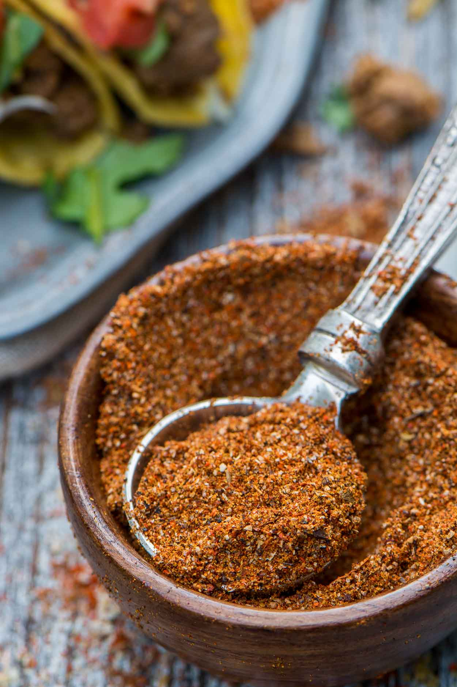

Taco Seasoning

Image source: https://www.simplerevisions.com/wp-content/uploads/2014/03/Taco-Seasoning-g-1.jpg
Description
Below is the worlds best all natural taco seasoning, used to create the best
tacos of all times. Really, out of this world!
Ingredients
- 1 tablespoon chili powder
- 1 1/2 teaspoons ground cumin
- 1 teaspoon sea salt
- 1 teaspoon ground black pepper
- 1/2 teaspoon ground paprika
- 1/4 teaspoon garlic powder
- 1/4 teaspoon onion powder
- 1/4 teaspoon crushed red pepper flakes
- 1/4 teaspoon dried oregano
Steps
- Mix spices in bowl, then shake it like what your mama gave ya!
Index